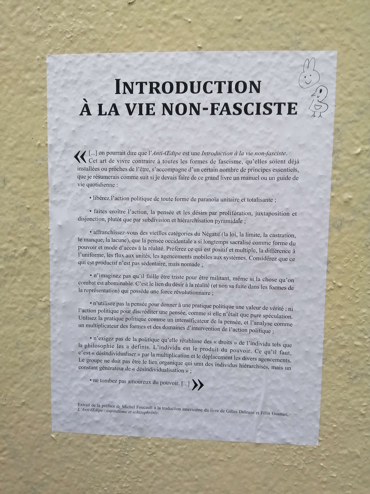
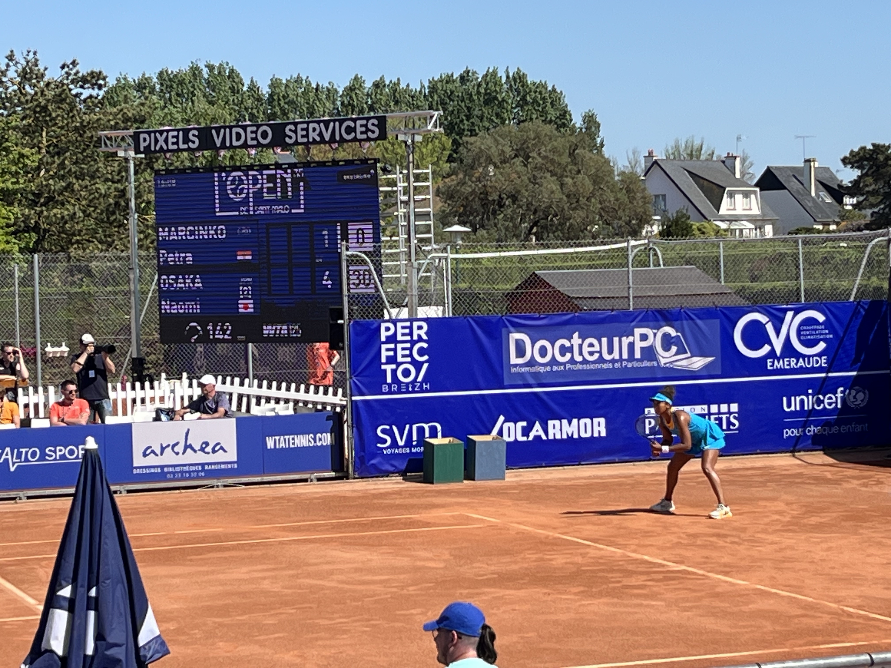

四月散记2025
1
我和coco每天都出门散步，突然有一天发现，雷恩市中心到处贴满了一张白底黑字的海报，没有任何设计，只有一大段文字，来自福柯给德勒兹和Félix Guattari的反俄狄浦斯写的导言，刚好这个月我和coco都在读德勒兹，讨论德勒兹，突然一下与城市感到亲近，与城市里的陌生人感到亲近，春天来了，一切都那么好，我们也要把喜欢的段落打印出来，贴出去！

2
复活节的周末赶上Bécherel的图书节，和coco还有他爸妈过去转了转。天气预报要下雨，意外放晴，松了口气。市中心的广场上摆满了书摊，法国人爱看书的刻板印象在这个小镇上变得具体。一个人口不到一千的小镇，只有两家咖啡店，却有16家书店，大部分卖的是二手书，得全镇人都爱买书才能养活这么多家书店吧，毕竟书也是生意。

不过法国确实是我目前生活过的最有阅读氛围的地方。刚开始学法语的时候，在youtube上懵懵懂懂地看点Apostrophes，一个文学沙龙节目，能听懂的不多，只是看个氛围，后来了解到，这个节目从1975年播到1990年，15年的时间里，一直是每周五晚9点40的黄金档，嘉宾还邀请过尤瑟纳尔，纳博科夫（虽然这集挺无聊的，问题都提前给到他，纳博科夫写好答复全程念稿，零即兴），昆德拉，埃科，杜拉斯，桑塔格等等等等，原来以前的电视上不只有娱乐明星，还有文学明星，想象一下，七八十年代的法国普通家庭，周五晚吃过饭后，一家人围坐在电视机前，听人七嘴八舌聊书，很远又很近的，另一个世界。
我生活过的雷恩和斯特拉斯堡的市中心广场都是二手书商摆摊的地方，雷恩几乎天天有书商出摊，coco也几乎天天去逛，渐渐就摸清了门路。比如有一位书商是极右派，还会从散落在城市各处的漂流书箱里拿免费的书来卖，我们总是绕过他，在心里抗议。有一位书商的书很符合coco的胃口，人很健谈，爱拉着coco聊天，但书卖得稍稍贵一点，卖书给他也多有不收的。还有一位叫Sebastian，人好话少书不贵，在他的摊上不一定能淘到书，但卖书给他总是一股脑全收了的，两个月前就是从他那儿收了不少中文书。
这位Sebastian和几个朋友在Bécherel也开了一家书店，名叫Les tigres de papier，没想到法语里也有纸老虎这个说法，立刻就感到亲切了，走进去，室内采光很好，不像其他几家书店只开有几扇小窗，想问老板为什么起这个名字，没问出口。后来查了一下发现，法语里的纸老虎是五十年代从中文里传过去的，我和这个词因为各种原因都来到了Bécherel这个小镇上， 种种巧合都无法被解释。
在Bécherel逛了一整个下午，coco想买一本德勒兹的Le Pli，找了半天没找到，感觉整个镇上那么多家书店里一共也没几本德勒兹的书，我们安慰自己说，一定是德勒兹太火了，都卖光了，替他高兴。我倒是没想着要买书，却意外收获了一本Robert Musil的The Man Without Qualities和Kierkegaard的Either/Or，非常满意。


吃完晚饭后立刻就开始翻新书，像小时候拆玩具，睡前读Either/Or读到这里：
Something marvelous has happened to me. I was transported to the seventh heaven. There sat all the gods assembled. As a special dispensation, I was granted the favor of making a wish. “What do you want,” asked Mercury. “Do you want youth, or beauty, or power, or a long life, or the most beautiful girl, or any one of the other glorious things we have in the treasure chest? Choose—but only one thing.” For a moment I was bewildered; then I addressed the gods, saying: My esteemed contemporaries, I choose one thing—that I may always have the laughter on my side. Not one of the gods said a word; instead, all of them began to laugh. From that I concluded that my wish was granted and decided that the gods knew how to express themselves with good taste, for it would indeed have been inappropriate to reply solemnly: It is granted to you.
心满意足，可以结束这一天去睡觉了。从St. John’s毕业后好久没再读Kierkegaard，想起St. John’s，想起大四的时候读Fear and Trembling读到自己也tremble，想起跟谷老师在state circle，草坪上的长椅上聊，a true knight of faith looks just like a common man，是啊，a common man，记得草坪很绿，四周没有人，很安静的冬天，是冬天吗？五年过去了，时间很轻，想着想着在床头上又坐起来，重新翻开书，还是那个Kierkegaard，书和回忆都会不会离开我们。
3
不紧不慢地读着《金瓶梅》，有时候读进去了，连着读好几章放不下来，有时候又忘个几天，很难才再捡起兴趣来，就这样读着读着也读完了六十一回，官哥儿死了，瓶儿将死，就像张竹坡说的那样“此书至五十回以后，便一节节冷去了”。
这两个月读《金瓶梅》慢慢才体会到，我作为一个读者终于变得更开阔了，之前读书有点越读越窄，小家子气地偏爱likeable或者relatable的人物甚至作者，去年读安娜卡列尼娜就读不进去，心里总在暗暗责备安娜，相比之下，可爱又可怜的Martin Eden就读得津津有味，如果在阅读里对not likeable, not relatable，甚至只是与自己不同的人物没有耐心的话，生活里又如何能够理解更复杂更具体的人。《金瓶梅》自然一下就颠覆了以往所有的阅读经验，所有的人物都很难称得上likeable，生活里要是遇上了都要敬而远之吧，但其实生活中又到处都是这样的人，我们也都是这样的人，把表面上的成见打破后看细节会被吓到，被细节之丰富吓到，被细节里处处有自己吓到，如果带着道德或者价值上的评判去读，这书就没法读了，放下批判说来容易，一开始不习惯，读起来磕磕绊绊，更别说要写，作者的平静和中立让人叹服。
田晓菲说这是慈悲，刘天昭说这是无我，感觉都对，又都差了一点，除了在最繁华悲凉最温柔暴力最深恶痛绝处继续几乎隐形又坚实的笔力外，还有幽默，那样轻盈的幽默，在最严肃最意想不到的地方让人发笑，官哥儿的死和瓶儿的死中都有其幽默之处，这种看似不合时宜的幽默最难写，而往往好的作品里都有这样的幽默，贝克特的幽默，福克纳的幽默，不仅仅是文学，哲学也是，斯宾诺莎的幽默，德勒兹的幽默，这种幽默不是普鲁斯特的玛德琳娜，不是一眼就可以看到的，是深厚又近乎是直觉性和生理性的，这种幽默就是见证，见证作者看到了也写出了，人性中广阔深邃且复杂的地方，就连兰陵笑笑生这个名字也是幽默的。不知道作者会怎么写西门庆和潘金莲的死，怎么写其中的冷热快慢，很期待。
读《金瓶梅》又让人想起St. John’s，想起大四那年的《红楼梦》阅读小组，多想和谷老师和其他johnnie一起读《金瓶梅》，肯定比我自己一个人读有意思，有些书像诗歌或者意识流之类，一群人一起讨论不一定能聊出东西来，但《金瓶梅》《红楼梦》肯定不属于此类，更多是一加一大于二，自己在误会里飘远了，总是能被其他人拉回来，被细节锚定回书里，安心，踏实。
4
德勒兹谈斯宾诺莎，《Sur Spinoza》，绝对是本月最大的惊喜，une rencontre de vie，夸张了，这种话要等年纪大点再说。
断断续续读过点德勒兹，这儿一点那儿一点，挑着感兴趣的读，比如德勒兹谈文学谈电影谈绘画，他的老本行哲学还没好好读过。这次的契机是午夜出版社把德勒兹在Université Paris 8 Saint-Denis1980年到1981年讲课的录音整理成了一本书，感谢当时的日本留学生Hidenobu Suzuki录下了这些课（应该是这个视频里德勒兹左边戴眼镜的学生，在0:49还可以看到他按下录音键），在十年多的时间里，周二固定早起抢位子，带着设备坐在德勒兹旁边的位置录音，273张磁带，413个小时，他不是唯一这么做的学生，却是设备最好的，让我们在今天还能在youtube上听见德勒兹的声音，这就是科技带来的奇迹吧，不能总是抱怨这个时代不好。
一直觉得哲学很干，很抽象，从St. John’s毕业后很少再碰哲学书，偶尔翻一翻，很难被谁说服，还是那个刻板印象，哲学是文字的游戏，概念的游戏，首先要接受这个游戏。直到看了德勒兹的l’Abécédaire，在H comme Histoire de la Philosophie一集里他提到，读哲学，如果找不到哲学概念所回应的问题，那这些概念就是抽象的，但一旦找到了那个问题，概念就会变得具体而清晰。好像推开了一扇门。coco又在门前推了我一把，一次在家旁边的公园里散步，他聊起德勒兹和柏格森，我开玩笑地说，一定因为你是intp，所以哲学合适你，我是infp，所以文学合适我，他却很严肃地回复说，有可能，但主要是“好”的哲学能改变观看的方式，思考的方式，能改变思想的图像（image de la pensée），那扇门就在眼前，迫不及待要走进去，于是翻看德勒兹谈斯宾诺莎。
《Sur Spinoza》是具体而清晰的，至少目前读了一半下来，不干，不枯燥，偶尔抽象了，先放过，应该是还没理解到位。斯宾诺莎的《伦理学》大三的时候草草读过一点，只有一个印象，哲学里的欧几里得，要用数学的方法建立一个哲学的世界，一个什么样的世界，在回应什样的问题，全都忽略了，自然读成了哲学感念的抽象堆积。德勒兹提出一个问题，为什么斯宾诺莎的这本书叫伦理学，pourquoi l’Éthique，当头一棒。
德勒兹把伦理（éthique）和道德（morale）对立起来，区别在于，在一个道德体系中，有一套价值的高低秩序，我们总是“应该”如何如何（dans une morale, il y a une hiérarchie des valeurs, il faut quelque chose），这意味着，有绝对的善恶好坏，人人纠缠在无穷无尽的批判当中，批判自己的同时也被他人批判，这样的体系催生出权力，为他人为社会做道德批判的人（智者，神父，暴君）拥有权力，高于他人。
而在一个伦理体系中，众生平等（dans une éthique, tout est égale），没有道德批判，因为没有绝对的善恶，只有相对的好坏，人并不高于石头，“Je suis une manière d’être, et je suis rien d’autre（p. 47）.”我们都只是一种存在方式，那绝对无限实体的众多存在方式中的其中一种，没有高下之分，也就无需自我批判也无需批判他人，这个体系里的政治体制是民主制，我“选择”被代表，而不是我“应该”被代表。多么宽慰，开放，自由。
摘抄一段，怎么样归纳总结都没有原文说得好：
La morale, c’est le système du jugement, du double jugement. Vous vous jugez vous-même et vous êtes jugé. Ceux qui ont le goût de la morale, c’est ceux qui ont le goût de jugement. Si vous n’avez pas le sens du jugement, si vous ne voulez juger ni vous-même ni les autres, vous n’êtes pas moral. Est-ce que ça veut dire que vous êtes radicalement méchant? Ça peut vouloir dire ça. Ou bien, c’est que votre affaire est ailleurs.
Dans une éthique, c’est complètement différent, vous ne jugez pas. D’une certaine manière, vous dites: quoi que vous fassiez, vous n’avez jamais que ce que vous méritez. Quelqu’un dit ou fait quelque chose, vous ne rapportez pas ça à des valeurs pour juger. Vous vous demandez justement: comment est-ce possible de manière interne de dire ce truc-là, de faire cette chose-là? En d’autres termes, vous rapportez la chose ou le dire au mode d’existence qu’il implique, qu’il enveloppe en lui-même. Encore une fois, vous entendez un discours et vous dites: mais pour dire ça, comment faut-il être? Quelle manière d’être ça implique? Vous cherchez les modes d’existence enveloppés, et non pas les valeurs transcendantes. C’est l’opération de l’immanence (p. 74).
另一个区别在于驱动力，道德体系中的暴君神父奴隶都是无能者（les impuissants）, “Ils ont besoin d’attrsiter la vie. Nietzsche aussi dira : ils ont besoin de faire régner la tristesse parce que le pouvoir qu’ils ont ne peut être fondé que sur la tristesse (p. 97).” 无能者的权力只能建立在悲伤之上，而伦理体系中的驱动力是幸福，精彩！能展开到这里，绝不再是文字的游戏，不是概念的游戏，哲学写到这里已经不仅仅是哲学，读明白读进去，绝不是玩味所谓的抽象概念，而是一种存在方式，一种观物观己的方式，毕竟所谓道德体系和伦理体系都无关真理，只是一种选择，一种审美，一种sensibilité，关乎于我们想要如何生活，如何看待自己看待他人。
德勒兹谈斯宾诺莎意外地和《金瓶梅》形成了平行阅读，斯宾诺莎的角度和兰陵笑笑生的角度太像，没有道德批判，始终是敞开的，平视的，接纳的，西门庆也好，潘金莲也好，只是众多存在方式中的一种，他们被内在悲伤驱动，也被内在幸福驱动，走向各自的结局，用德勒兹的或者斯宾诺莎的方式去提问，就不会问他们究竟是好人还是坏人，而是会问，他们是怎样的一种存在方式，他们是因为有怎样的内在性而做出了这样那样的选择。
有时候在网上读到一些义愤填膺的评论，批判《金瓶梅》或者批判其他书和作者，就会想到德勒兹的这段话:
Trouvez ceux que vous aimez. Ne passez jamais une seconde à critiquer quelque chose ou quelqu’un. Ne critiquez jamais, jamais, jamais. Si on vous critique, vous dites: d’accord. Passez. Rien à faire. Trouvez vos molécules. Si vous ne trouvez pas vos molécules, vous ne pouvez même pas lire. Lire, c’est trouver vos molécules à vous (p. 165).
是啊，阅读就是，找到自己的那本书，不需要浪费时间在别人的书上，且永远永远永远，不要批判。
5
coco转给我一则新闻，离雷恩不远的一个小镇Saint-Hilaire-des-Landes，在举办一个传统活动，牛粪彩票，几头牛被圈在一块草地上，地上划分了格子，每个格子有对应的编号，如果牛在某个格子上拉屎，该格子对应的号码就是中奖号码，大奖是1000欧的购物卷，真是太有想象力太有意思了，这样的传统活动多好！
6
这个月在读的书都不好读，所以又选了本稍微轻松点的文学，继续读刘天昭，散文和诗集都读完了，剩下最后一本长篇小说《无中生有》，太长了，犹豫了好久，但因为是刘天昭，还是决定要看，对作者的一种无条件信任，她以后无论是写什么题材我都会买来看的。前两章读得很懵，明明是用第三人称写的，读起来却像第一人称，两个人称在脑袋里来回跳，读到第三章终于正式转成第一人称，不用来回跳了，长舒一口气。
刘天昭的书估计不太适合拿来和人讨论，她把自己解释的很清楚，把人物解释的很清楚，哪怕这个清楚只是一种错觉，散文诗歌小说里的那个“我”，都在不停地审视自己，不停地提出问题并试图给出答案，再习惯性否定当下的答案，继续提问，继续回答，继续怀疑给出答案的可能性，怀疑答案的真实性，怀疑所有，太自觉太流畅了，这个“我”活得并不轻松，但在叙述的同时好像又松了口气，只要能写，哪怕只是大概地写，猜着写，摸着写，就还能忍受，还能继续，悲观和乐观的混合体，复杂的博弈，在她的意识里无意识里的那些来来回回是动人的，真诚的，实实在在的，看着虚的地方并不飘，很深厚，在扎根，down to earth, 所以总是被打动，不知道看什么的时候，不想读书的时候，就会想读她，慢慢就积累出来了，一种无条件的信任。
7
coco一拍脑袋决定去Saint-Malo看女子125赛，第一轮有Naomi Osaka，他其实不看网球，是我最近被网球迷住了，追着看了Madrid女子1000赛，粉上了Iga Świątek。坐了个一大早的flix bus，两个人不到10欧，一个小时后就到了Saint-Malo，看到了大海，感谢公共交通。
其实说是看网球，更多是在看竞技体育的氛围，被无限放大的个体的情绪，所有的眼睛盯着一个人，在时间紧压力大的情况下，如何才能不被自己的情绪控制，不被对手的情绪控制，如何在处于劣势的时候及时调整状态，放下mind， 放下emotions，用肌肉记忆和直觉打球，太难了，也就太好看了，比电影还精彩。
于是在Saint-Malo第一次看了网球现场，红土，大太阳，坐都坐不住，风要把土都卷起来，一个小小的场地里，那么多人，那么多颜色味道，那么多声音质地，以为是夏天来了。
